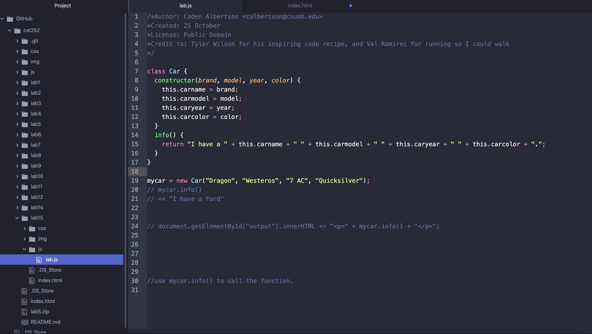

Lab 18: Libraries and Frameworks
Challenges
We'll see if there are any larger challenges.
Results
An html index including input from Bootstrap, Popperjs and jQuery that should make a navbar at the top of the page that links to my homepage, lab 15, lab 16, and lab 17, and grid system that divides my work into 3 columns.
This what I coded in Atom.

Script Output
You see this grid? It's pretty sweet right? Also, you see that sticky nav bar? It's sicker than Tony Hawk right?